Cape Town MayCo Member serves millionth meal
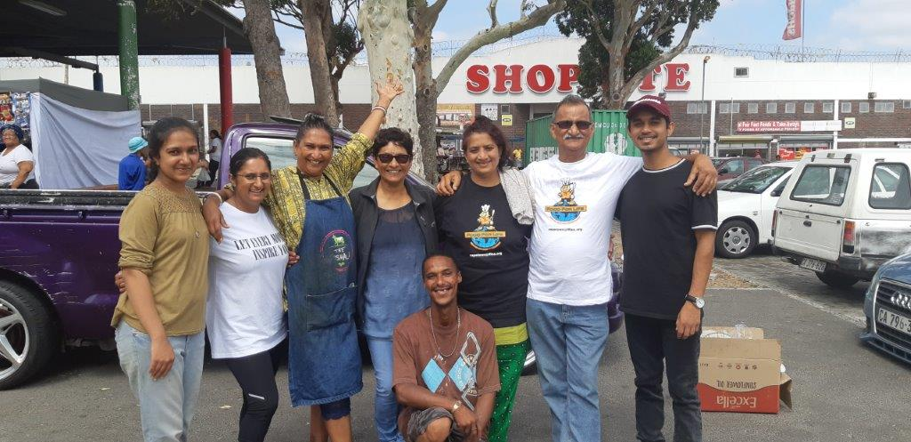
Cape Town Food For Life Team
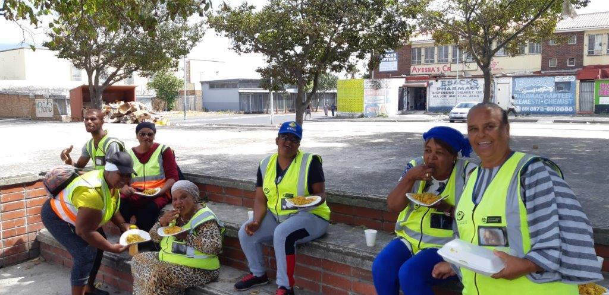
Food For Life Members At Cape

Locals At Cape Branch Enjoying their Neal
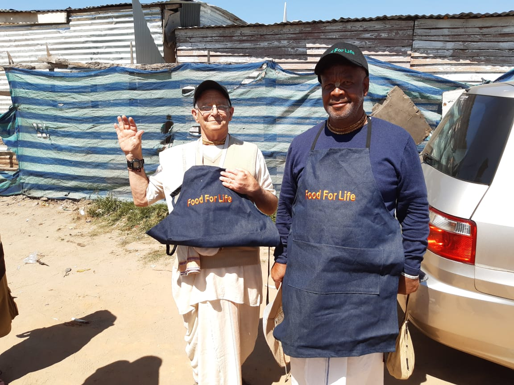
Food For Life Serving Team

Food for Life Cape Town visited our friends in Grabouw.
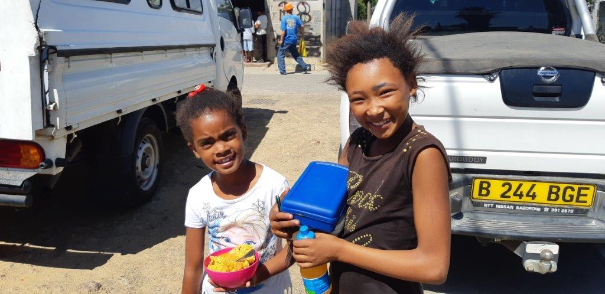
FOOD FOR LIFE CAPE TOWN VISITS STELLENBOSCH – 9th MARCH 2019

Hall Catering

Community Having Meal
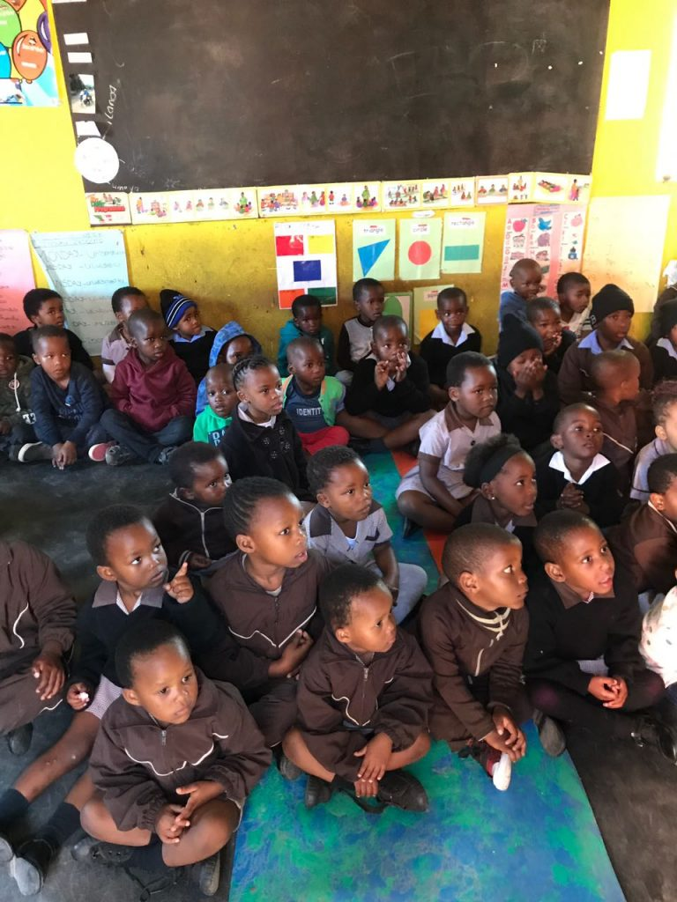
Mandela Day Program at Engonyameni
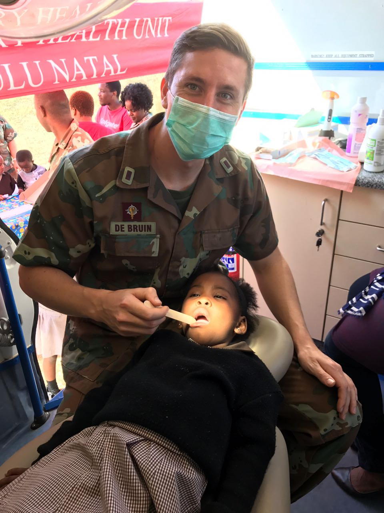
Health Support Provided
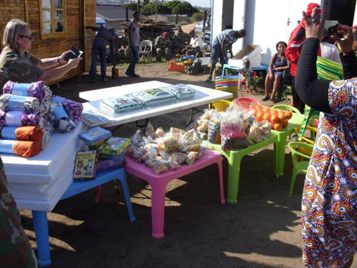
Parcel Compaign for Mandela Day
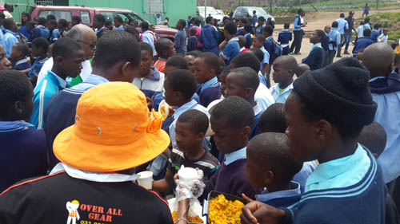
Meal Distribution for Inchanga Primary
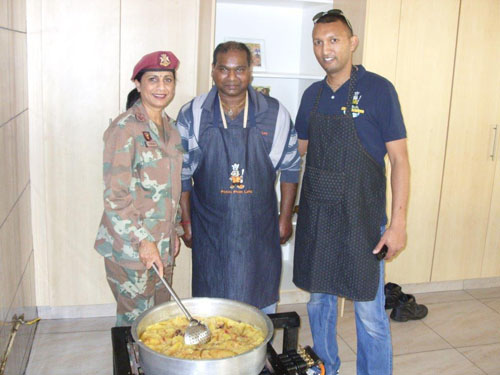
Meal Preparation with One of SANDF
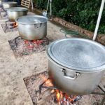
Western Region cooks up a wood-fired feast

Providing Food For Children
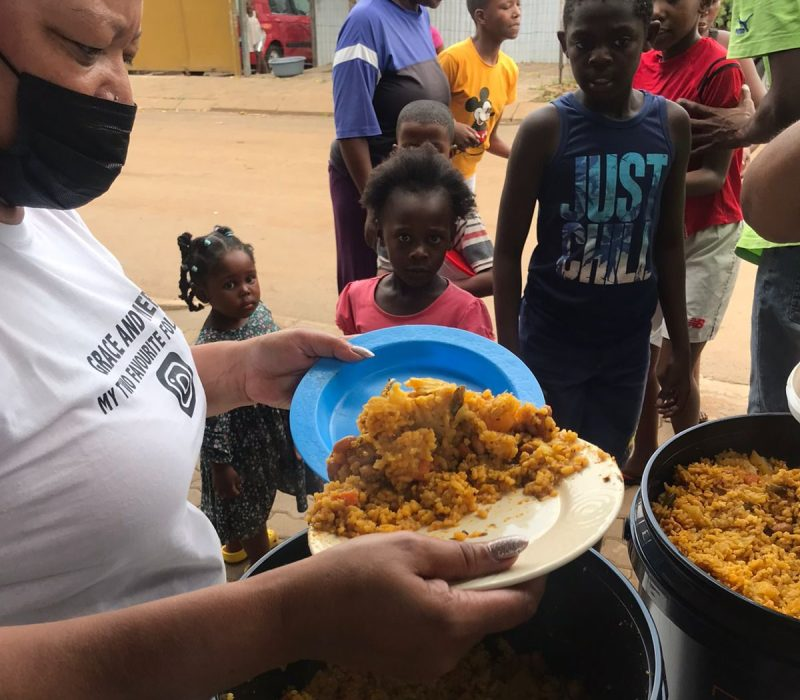
Giving Food to Children
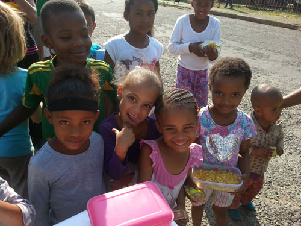
Happy Children Having their Meal

Food to be provided to the community
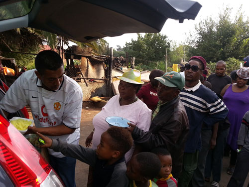
Feeding the community

Feeding Learners at School

Feeding the Community
Community of Soweto getting Food

Children about to have their meal
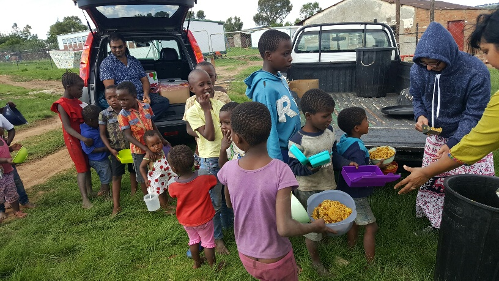
Serving Kids with love
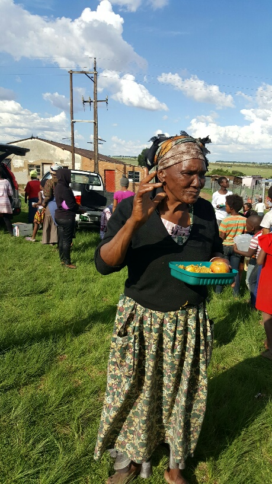
Grandma having her delicious meal
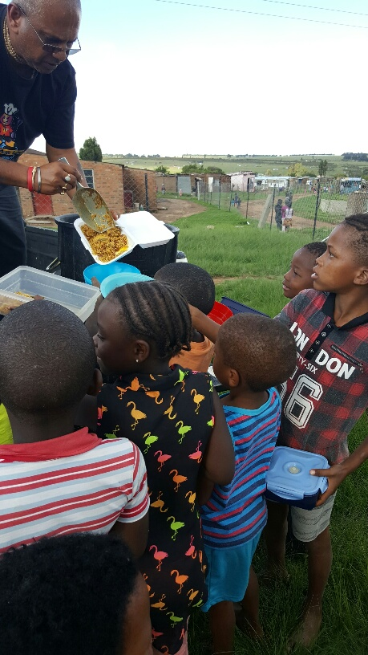
Kids Happy to get their meal

Community about to get their food

Meal about to be Provided

Serving food to community
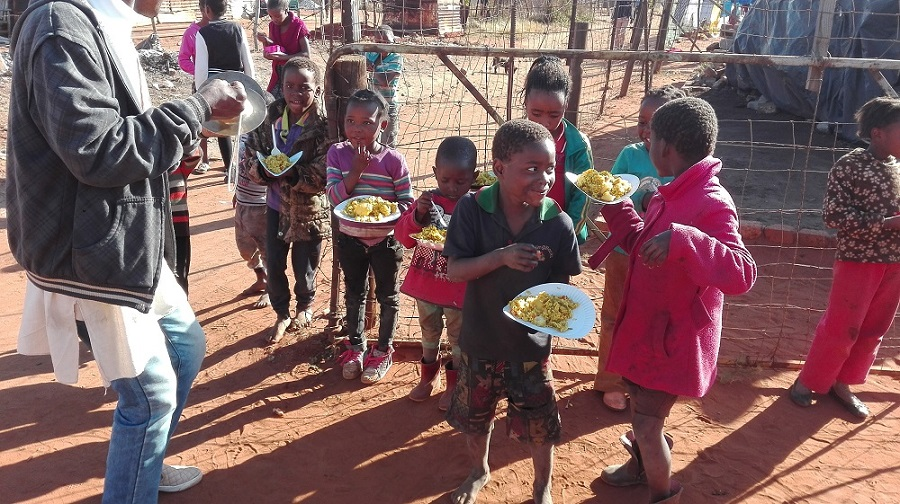
Keeping Smile to the Children

Little One about to Have her Meal
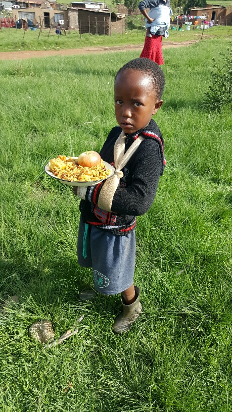
Young one having his Meal